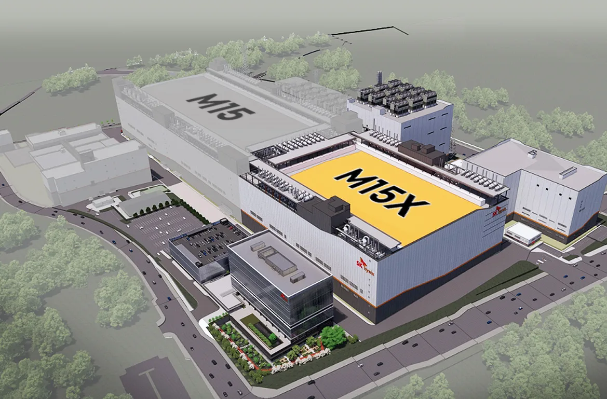

SK하이닉스를 볼 때 요즘 투자자가 가장 먼저 떠올리는 단어는 HBM입니다. AI 가속기 한 대가 더 많이 팔릴수록 고대역폭 메모리의 중요성이 커지고, 그 흐름 속에서 SK하이닉스는 강한 가격 결정력과 고객 신뢰를 얻고 있습니다. 다만 주주 입장에서는 여기서 한 걸음 더 들어가야 합니다. HBM이 잘 팔린다는 사실보다 더 중요한 질문은 이 호황이 설비투자와 패키징 증설 비용을 이긴 뒤 실제로 남는 현금으로 얼마나 빨리 바뀌느냐입니다.
2025년 SK하이닉스는 매출 97.1467조원, 영업이익 47.2063조원, 순이익 42.9479조원을 기록했다고 발표했습니다. 메모리 기업으로는 매우 강한 숫자이고, 4분기 영업이익률도 58%까지 올라왔습니다. 이런 숫자만 보면 투자 판단은 쉬워 보입니다. 그러나 메모리주는 늘 다음 질문을 함께 받아 왔습니다. 지금의 이익이 고점인지, 아니면 구조적으로 오래 남을 수 있는 이익인지입니다.
이번 SK하이닉스 글은 주가 방향을 단정하려는 글이 아닙니다. HBM 수요가 강한 것은 이미 많은 투자자가 알고 있습니다. 그래서 오히려 덜 보이는 부분을 보겠습니다. M15X와 용인 클러스터, HBM4 전환, 고객 인증, eSSD 회복, 범용 DRAM 가격, 그리고 자유현금흐름의 회수 속도입니다. 이 여섯 가지가 맞물려야 SK하이닉스의 강한 이익이 주주에게 남는 이익으로 이어집니다.
HBM 매출보다 남는 현금이 먼저

HBM은 일반 DRAM보다 훨씬 까다로운 제품입니다. 여러 DRAM 칩을 쌓고, 칩 사이를 연결하고, 열을 빼고, 고객이 요구하는 성능과 신뢰성을 맞춰야 합니다. 그래서 단가가 높고 마진도 좋지만, 동시에 투자도 큽니다. 좋은 제품일수록 먼저 돈을 써야 하고, 그 돈이 회수되는 시점은 고객 인증과 양산 수율에 달려 있습니다.
SK하이닉스의 2025년 실적은 HBM이 회사의 이익 체질을 바꿨다는 점을 보여줍니다. 회사는 HBM 매출이 전년 대비 두 배 이상 늘었다고 설명했고, 고부가 제품 비중 확대가 사상 최대 실적을 이끌었습니다. 여기까지는 분명한 강점입니다. 하지만 투자자는 매출 증가율만 보고 끝내면 안 됩니다. HBM 매출이 늘수록 첨단 패키징, 테스트, 장비, 공장 인프라 투자도 같이 커지기 때문입니다.
주식시장은 영업이익을 좋아하지만, 시간이 지나면 결국 현금흐름을 묻습니다. 설비투자가 빠르게 늘면 영업이익이 좋아도 자유현금흐름은 늦게 따라올 수 있습니다. HBM 호황이 정말 강한 투자 포인트가 되려면 SK하이닉스가 높은 영업이익률을 유지하면서도 재고와 매출채권, 장비 투자, 신규 팹 투자 부담을 관리해야 합니다. 주주가 확인해야 할 핵심은 “얼마나 많이 팔았나”가 아니라 “얼마나 남겼고, 그 돈이 다시 얼마를 요구하나”입니다.
M15X와 용인은 선택지가 아니라 시간표
관련 영상
SK하이닉스 HBM 패키징 공정을 설명하는 공식 영상
SK하이닉스가 M15X 투자를 진행하는 이유는 단순히 공장을 하나 더 짓기 위해서가 아닙니다. HBM은 같은 물량을 확보하는 데 일반 DRAM보다 더 큰 생산 능력을 요구합니다. 회사는 M15X를 차세대 DRAM과 HBM 대응을 위한 청주 생산 거점으로 설명했고, 신규 팹 건설에 약 5.3조원, 장기적으로 20조원 이상 투자가 들어간다고 밝혔습니다. 이 숫자는 HBM 호황의 그림자입니다. 수요가 크기 때문에 투자가 필요하고, 투자가 필요하기 때문에 회수 속도를 따져야 합니다.
M15X는 청주 M15 인근에 있어 TSV와 패키징 역량을 연결하기 좋다는 설명이 붙어 있습니다. HBM은 웨이퍼를 많이 찍는 것만으로 끝나지 않습니다. 적층과 연결, 테스트, 고객별 품질 조건이 붙습니다. 그래서 생산 거점의 위치와 후공정 역량이 함께 중요합니다. SK하이닉스가 M15X를 빨리 안정화할수록 고객 주문을 놓치지 않을 가능성이 커지지만, ramp-up이 늦어지면 투자비가 먼저 쌓이는 구간이 길어질 수 있습니다.
용인 반도체 클러스터도 같은 맥락입니다. 장기적으로는 생산 기반을 넓히는 강한 무기이지만, 단기적으로는 시간표와 비용의 문제입니다. 공장과 인프라, 전력, 용수, 장비 반입, 인력 확보가 맞아야 실제 매출이 나옵니다. 주주가 이번 사이클에서 확인해야 할 것은 SK하이닉스가 공장을 많이 짓느냐가 아니라, 그 공장이 HBM4와 서버 메모리 수요를 놓치지 않는 시점에 맞춰 돈을 벌기 시작하느냐입니다.
고객 분산은 주가의 안전판
HBM은 고객 인증 산업에 가깝습니다. AI 반도체 기업과 클라우드 고객은 성능이 조금 더 좋은 제품만 보는 것이 아니라 납기, 발열, 안정성, 다음 세대 전환 가능성까지 함께 봅니다. 한 번 인증을 받으면 반복 공급 가능성이 커지지만, 세대가 바뀌면 다시 검증을 받아야 합니다. 그래서 SK하이닉스의 HBM 경쟁력은 단순 점유율이 아니라 고객 신뢰의 누적입니다.
다만 고객 신뢰가 특정 고객에게 과하게 집중되면 양날이 됩니다. 대형 고객의 주문이 몰리면 실적은 빠르게 좋아지지만, 그 고객의 제품 출시 일정이나 자체 설계 변화가 생기면 변동성도 커집니다. 투자자는 “누가 많이 사느냐”보다 “고객이 얼마나 넓어지고 있느냐”를 봐야 합니다. 엔비디아 중심의 AI 가속기 시장뿐 아니라 AMD, 맞춤형 반도체, 클라우드 자체 칩 쪽에서 HBM4 수요가 얼마나 넓어지는지가 중요합니다.
고객 분산은 주가의 안전판 역할을 합니다. SK하이닉스가 여러 고객에게 HBM4를 안정적으로 공급할 수 있다면 시장은 고마진 이익의 지속성을 더 높게 평가할 수 있습니다. 반대로 경쟁사가 특정 고객 인증을 빠르게 따라잡고 공급이 넓어지면 가격 협상력은 약해질 수 있습니다. 결국 HBM의 다음 관전 포인트는 “수요가 있나”가 아니라 “그 수요가 한 고객에 묶이지 않고 오래 유지되나”입니다.
분기마다 적어 둘 숫자
SK하이닉스를 볼 때 첫 번째로 적어 둘 숫자는 HBM과 서버 DRAM의 성장입니다. 회사가 제품별 매출을 세세하게 모두 공개하지 않더라도, 고부가 제품 비중과 전체 영업이익률이 함께 움직이는지 보면 힌트를 얻을 수 있습니다. HBM이 좋다는 말만 반복되는 분기보다, HBM과 일반 DRAM 가격, 서버 모듈 수요, eSSD 출하가 같이 좋아지는 분기가 더 단단합니다.
두 번째 숫자는 설비투자입니다. M15X, 용인, 첨단 패키징, EUV 장비는 모두 미래 매출을 위한 투자입니다. 그러나 주식은 미래만 보지 않고 현재의 현금 부담도 봅니다. 투자 규모가 커지는 분기에는 영업현금흐름과 자유현금흐름을 나눠 보셔야 합니다. 영업으로 돈을 잘 벌었는데 설비투자가 더 빠르게 늘면 주주환원 여력은 예상보다 늦게 열릴 수 있습니다.
세 번째는 재고입니다. 메모리 기업에서 재고는 단순한 창고 숫자가 아닙니다. 재고가 너무 낮으면 수요를 놓칠 수 있고, 너무 높으면 다음 가격 하락 때 손실이 커질 수 있습니다. HBM처럼 고객 맞춤 성격이 강한 제품은 범용 메모리보다 재고 해석이 복잡합니다. 그래서 재고 총액만 보지 말고 DRAM, NAND, 서버 제품, eSSD 수요가 어떤 방향으로 설명되는지 같이 읽는 편이 좋습니다.
네 번째는 경쟁사의 속도입니다. 삼성전자와 마이크론이 HBM4 인증과 양산에서 얼마나 따라오는지에 따라 SK하이닉스의 가격 방어력은 달라집니다. 경쟁사가 늦으면 SK하이닉스의 프리미엄은 오래 갈 수 있습니다. 경쟁사가 빨라지면 고객은 공급 안정성을 이유로 여러 회사를 동시에 쓰려 할 가능성이 커집니다. 이때 SK하이닉스는 단순 선두가 아니라 품질과 납기를 계속 증명해야 합니다.
다섯 번째는 주주환원입니다. 2025년 기록적인 실적을 바탕으로 SK하이닉스는 배당과 자사주 소각 계획을 발표했습니다. 이 흐름은 긍정적이지만, 주주환원은 현금흐름의 결과입니다. 앞으로도 배당과 자사주 정책이 강해지려면 높은 영업이익이 설비투자 이후에도 남아야 합니다. 그래서 주주환원 발표를 볼 때는 동시에 투자 계획과 현금 보유, 차입금 변화를 함께 보셔야 합니다.
정리하면 SK하이닉스의 핵심 질문은 HBM 수요가 있느냐가 아닙니다. 이미 시장은 그 수요를 압니다. 더 중요한 질문은 HBM4 전환과 고객 분산이 순조롭게 진행되고, M15X와 용인 투자가 필요한 시점에 맞춰 매출로 돌아오며, 서버 DRAM과 eSSD가 범용 메모리 사이클을 함께 받쳐 주느냐입니다. 이 조건이 맞으면 SK하이닉스는 단순 메모리 호황주가 아니라 AI 인프라의 핵심 현금창출 기업으로 평가받을 수 있습니다.
반대로 이 조건 중 하나가 흔들리면 좋은 실적에도 주가의 눈높이는 낮아질 수 있습니다. HBM 가격이 유지되지 않거나, 고객이 좁게 남거나, 설비투자가 먼저 커지거나, NAND 회복이 늦어지면 시장은 다시 메모리 사이클의 위험을 가격에 반영합니다. SK하이닉스 주주라면 다음 실적에서 매출과 영업이익만 보지 말고 HBM4 일정, 투자 규모, 현금흐름, 고객 확대, 재고 설명을 같은 줄에 적어 두는 편이 좋습니다.
이 글은 특정 가격대의 매수나 매도를 권하는 글이 아닙니다. SK하이닉스에 관심 있는 독자라면 “HBM이 좋다”는 한 문장보다 “좋은 HBM 매출이 남는 현금으로 돌아오는 속도”를 기준으로 다음 분기를 보셔야 합니다. 그 속도가 빨라질수록 현재의 높은 기대는 더 단단해지고, 그 속도가 느려질수록 좋은 뉴스와 주주 수익 사이에는 다시 간격이 생깁니다.